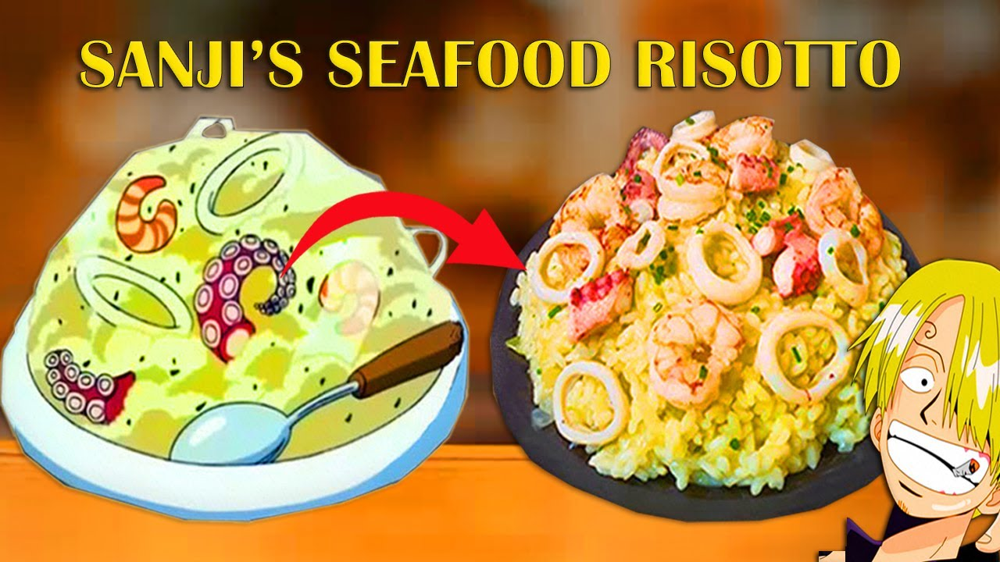

Sanji's Risotto
"The vast Ocean can be very cruel. It's awful to not have any food or water.
Just awful... I understand starving people more than anyone.
I don't care if you wanna die with dignity. But if you eat up, you'd be able to look
foward to a new tomorrow, won't you?"
The world class chef gave a man his life back with his delicious risotto.
Risotto is a northern Italian rice dish cooked with broth until it reaches a creamy consistency.
The broth can be derived from meat, fish, or vegetables.
Many types of risotto contain butter, onion, white wine, and Parmigiano-Reggiano.
Ingredients

- 2 Celery Sticks
- Onions
- Bay leaves
- 5 garlic cloves
- Leftover chicken bones
- 2 Octopus tentacles
- Lemon
- Arborio rice
- Butter(2-4 Knobs)
- Parmesan cheese
- Parsley
- Chieves
- shrimp
Steps

Credit
- Bring leftover Chicken bones to a boil(about 10 seconds) and rinse
- Add chopped onions,celery,bay leaves, and garlic cloves to pot of water and chicken bones.
- Bring whole pot to a boil and let simmer for about 4 hours
- Strain pot into another pot for broth
- In a pot full of water add octopus tentacles, celery sticks, onions, and lemon then bring pot to a boil then simmer for 10 minutes.
- In a pan, add cut tentacles and onions
- The add arborio rice to the pan. Add broth made earlier to pan little by little
- In another pan, add olive oil and cook seafood mixture(shrimp and onions) on medium high heat
- Add butter and chieves to first pan.
- Put mixtures together and top with lemon